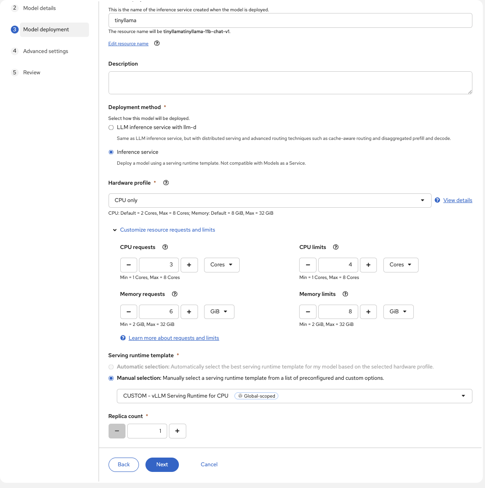
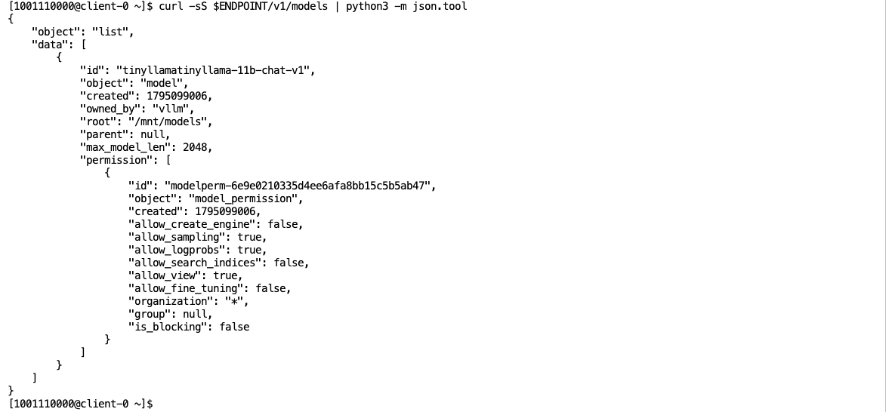

Lab 1: Serve an LLM on OpenShift AI (70 min)¶
Lab · 70 min
You run your own large language model inside the cluster: no external API, your data stays on your infrastructure. GPUs are scarce, so we start where many teams start: a small model on CPU, served by vLLM through KServe, OpenShift AI's model serving. The steps are the same with a bigger model on a GPU; only the size, the runtime and the hardware profile change.
You will: read a model card, deploy TinyLlama 1.1B from the model catalog, call it with curl
and the OpenAI Python client, and break it on purpose to see how vLLM reports a bad setting.
Values from your instructor: <USER_NAME>, <PASSWORD>, <CLUSTER_DOMAIN>.
Your project for this lab: <USER_NAME>-serving.
1. Which model fits? (10 min)¶
Every well-documented model on Hugging Face has a model card. What to look for:
| Section | What to look for |
|---|---|
| Architecture | Llama, Mistral, Granite, …: decides which runtimes support it |
| Size (parameters) | more parameters: usually more capable, always more memory |
| Intended use | chat, instruction following, code, embeddings |
| Context length | the longest prompt + answer the model was trained for |
| License | allowed for your use? |
| Hardware | CPU possible, GPU required, memory needed |
A rough sizing guide (16-bit weights; quantized models need less):
| Model size | GPU memory | Examples |
|---|---|---|
| < 3B parameters | ~8–12 GB, or CPU only | TinyLlama 1.1B, Granite 2B |
| 3B–7B | ~16–24 GB | Llama 3.2 3B, Mistral 7B |
| 7B–13B | ≥ 24 GB | Llama 3.1 8B |
| > 30B | several GPUs | Llama 3.1 70B |
Open the card of TinyLlama/TinyLlama-1.1B-Chat-v1.0 and note its context length (you need it in step 5) and its license.
2. Deploy TinyLlama (15 min)¶
- Log in to the OpenShift AI dashboard:
https://rh-ai.<CLUSTER_DOMAIN>(user<USER_NAME>, password<PASSWORD>). - Go to AI hub → Models, tab Catalog, and pick Workshop models in the row of categories (next to Red Hat AI models and Other models).
Open TinyLlama-1.1B-Chat-v1.0, read the card, then click Deploy model. A five-step wizard opens:
Not in the catalog? Go to your project → Models → Deploy model and choose URI as the model location with
oci://quay.io/rh-aiservices-bu/tinyllama:1.0. The rest is the same. - Preconfigure deployment: project
<USER_NAME>-serving. - Model details: already filled from the catalog: location URI
oci://quay.io/rh-aiservices-bu/tinyllama:1.0, model type Generative AI model. Nothing to change. - Model deployment:
-
Model deployment name: your
<MODEL_NAME>, e.g.tinyllama. The resource name below it is generated from the catalog name (e.g.tinyllamatinyllama-11b-chat-v1): click Edit resource name and give it the same value. From here on,<MODEL_NAME>in this guide means that name: it is also your model id and part of the endpoint
Here the resource name is still the generated one: click Edit resource name and set it to your
<MODEL_NAME>. -
Deployment method: Inference service (not LLM inference service with llm-d: that one is for distributed serving)
- Hardware profile: CPU only; expand Customize resource requests and limits: CPU requests 3, CPU limits 4; memory requests 6 GiB, memory limits 8 GiB
- Serving runtime template: Manual selection → CUSTOM - vLLM Serving Runtime for CPU
- Replica count 1
- Advanced settings:
- Model access (external route) and Token authentication: leave off; the model stays reachable only inside the cluster
- Configuration parameters: leave Add custom runtime arguments unticked for now (you use it in part 5)
- Deployment strategy: Recreate (one pod at a time: fits your CPU quota, and makes part 5's failure visible)
- Optional: tick Add as AI asset endpoint to also chat with your model in Gen AI studio → Playground
- Review → Deploy, and wait until the status is Started (a few minutes: the model image is pulled first).
What happened: OpenShift AI created a KServe InferenceService in your project; KServe started a
vLLM pod with the model mounted from the OCI image (a "modelcar").
3. Find the endpoint (5 min)¶
In your project → Models, click Internal endpoint next to <MODEL_NAME> and copy the URL.
It looks like:
The API is OpenAI-compatible, under /v1.
4. Call your model (15 min)¶
- In
<USER_NAME>-serving→ Workbenches → Create workbench: nameclient, image Jupyter | Minimal | CPU | Python 3.12 (or Data Science), the smallest size. Start it and open it. - Open a Terminal in JupyterLab. Set your endpoint, the Internal endpoint you copied in part 3
(without
/v1), and list the models it serves:
export ENDPOINT=http://<MODEL_NAME>-predictor.<USER_NAME>-serving.svc.cluster.local # your copied URL
curl -sS $ENDPOINT/v1/models | python3 -m json.tool

Example answer. The model id is the resource name of the deployment: here it was left at the generated name
(tinyllamatinyllama-11b-chat-v1); yours shows your <MODEL_NAME>.
curl: (6) Could not resolve host means the address does not match your deployment: copy it again.
Keep the id in a variable, so the next commands use whatever your deployment is called:
export MODEL=$(curl -sS $ENDPOINT/v1/models | python3 -c 'import sys, json; print(json.load(sys.stdin)["data"][0]["id"])')
echo $MODEL
- A chat completion:
curl -sS $ENDPOINT/v1/chat/completions -H 'Content-Type: application/json' -d @- <<EOF | python3 -m json.tool
{"model": "$MODEL",
"messages": [{"role": "system", "content": "You are a helpful assistant."},
{"role": "user", "content": "In two sentences: what is Kubernetes?"}],
"max_tokens": 100}
EOF
Slower than a cloud endpoint: CPU inference. Note usage in the answer (prompt and completion tokens).
- The same from Python, with the OpenAI client, in a notebook: File → New → Notebook (Python 3). The minimal image does not include the client, so the first cell installs it:
Then, in a new cell, with your endpoint (the URL you copied) and your model id (echo $MODEL in the
terminal shows it):
from openai import OpenAI
ENDPOINT = "http://<MODEL_NAME>-predictor.<USER_NAME>-serving.svc.cluster.local" # your copied URL
MODEL = "<MODEL_NAME>" # your model id
client = OpenAI(base_url=ENDPOINT + "/v1", api_key="none")
r = client.chat.completions.create(model=MODEL,
messages=[{"role": "user", "content": "Give me three names for a cat."}], max_tokens=60)
print(r.choices[0].message.content)
Any application that speaks the OpenAI API can use your model this way, with only the base URL changed.
5. Break it on purpose (15 min)¶
vLLM reserves memory for the longest context it will accept (--max-model-len). Ask for more than
the model supports and it refuses to start, with a clear message.
- AI hub → Models → Deployments (or your project → Models) →
<MODEL_NAME>→ ⋮ → Edit. - In Advanced settings, tick Add custom runtime arguments and enter
--max-model-len=8192(TinyLlama's card says 2048). Save / Redeploy.exceeded quota: lab-quotainstead? The deployment uses Rolling update, which starts the new pod next to the old one and goes over your CPU quota. Edit again → Advanced settings → Deployment strategy Recreate → save. - Watch it fail. The dashboard only says Deployment does not have minimum availability; the reason is in the log:
OpenShift console → project
<USER_NAME>-serving→ Workloads → Pods → the<MODEL_NAME>-predictor-…pod (status Error, restarting) → Logs. Find the line that explains why (it names the model's maximum length). - Edit again, untick Add custom runtime arguments (or remove the argument) and redeploy; the status returns to Started.
On a GPU the same setting decides how much GPU memory vLLM takes for the KV cache; too high is the most common reason a model does not start.
Checkpoint¶
<MODEL_NAME>is Started in<USER_NAME>-serving- you got a chat completion from it with
curland with the OpenAI client - you saw, and can explain, the
--max-model-lenfailure
If something goes wrong¶
- Stuck in Pending: not enough CPU in your quota or on the nodes; check the pod's events, or lower the CPU request to 2.
- No catalog entry: deploy from the URI (step 2).
- Your model won't start: use the instructor's model endpoint for steps 4–5 and come back to it.